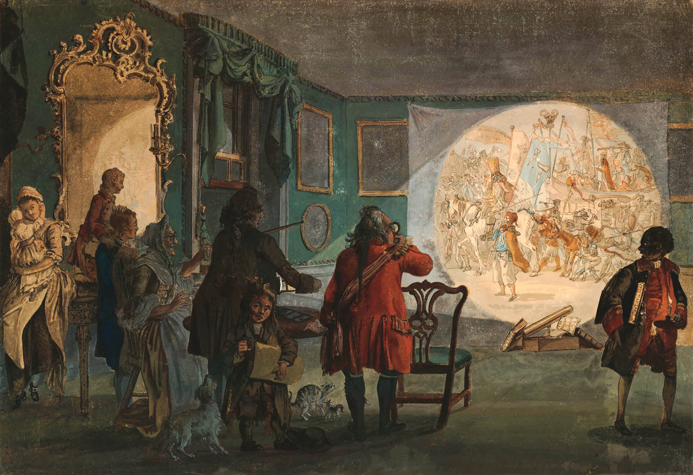
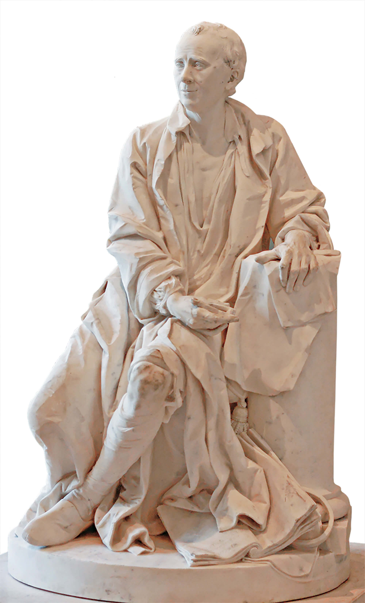
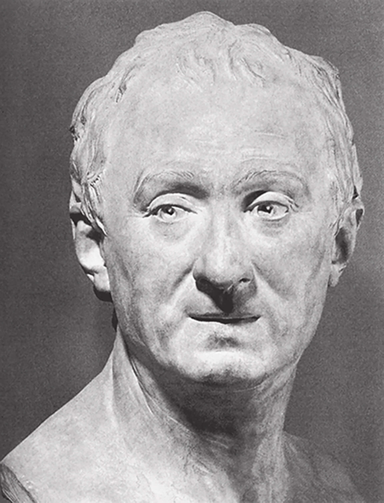
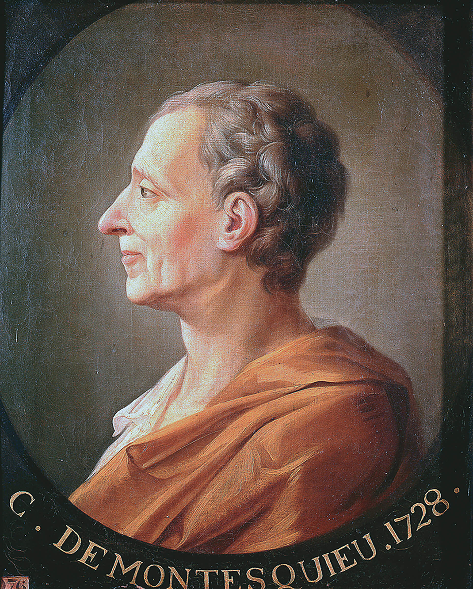
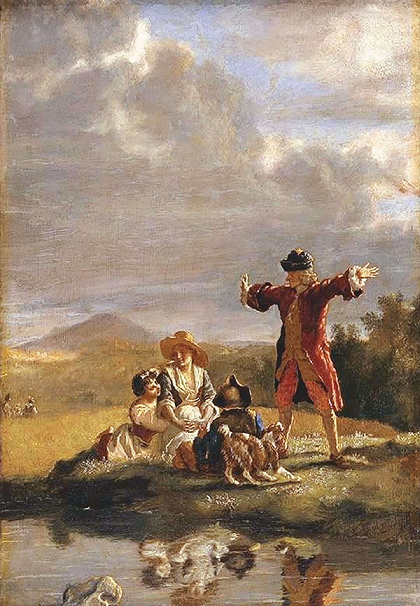
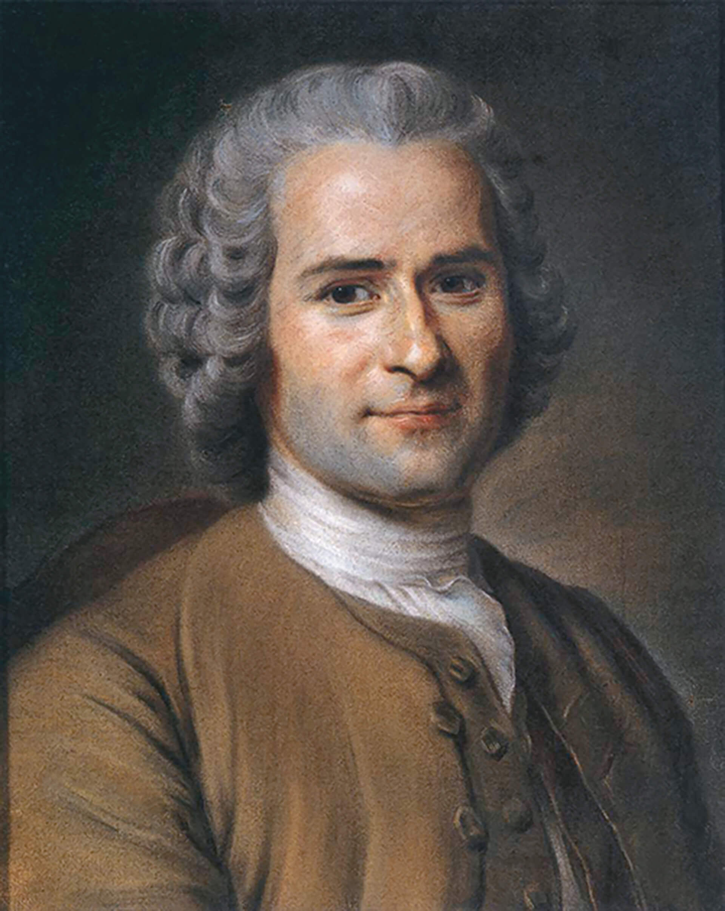
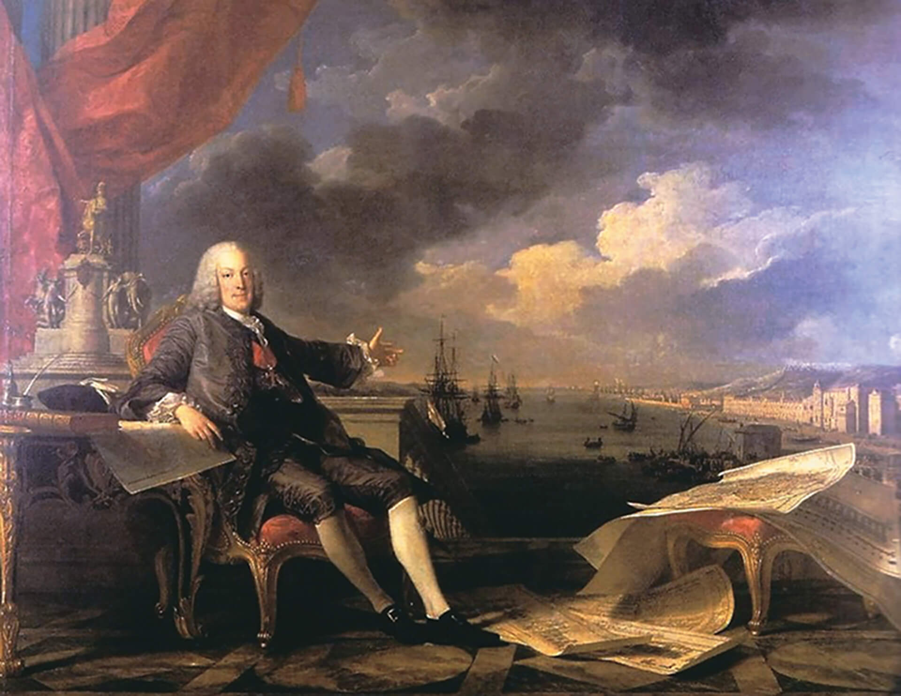

LEMONNIER, Anicet Charles Gabriel. Leitura da tragédia de Voltaire "O órfão da China" no salão de Madame Geoffrin em 1755. 1812. 1 óleo sobre tela, color., 126 cm × 195 cm. Château du Malmaison, Rueil.
Durante o século XVIII, muitas pessoas importantes do período reuniam-se em salões, como o da Madame Geoffrin. Conforme a imagem representa, dispostos ao redor de um busto de Voltaire, os participantes podiam discutir Filosofia,
Literatura, Artes e Política, um exemplo da intensa vida social e intelectual que caracterizou o movimento iluminista.
Ponto de partida
Apesar da vida corrida que levamos, muitas pessoas participam de grupos de leituras e de discussões sobre os mais variados temas. As escolas e universidades são grandes promotoras de eventos desse tipo.
A esse respeito, converse com seus colegas sobre as questões a seguir.
Você pertence a algum grupo de leitura ou de discussão? Em caso afirmativo, que temas são discutidos nesses encontros?
No Brasil, sempre foi possível promover discussões e amplos debates? Justifique sua resposta.
a Idade Moderna, os debates sobre temas políticos eram aceitos nos reinos absolutistas? Justifique sua resposta.
Objetivos da unidade:
conhecer e compreender o conceito de Iluminismo;
compreender a conjuntura europeia em que o Iluminismo se estabeleceu;
analisar as principais características e os conceitos da Revolução Científica;
conhecer os principais filósofos iluministas, destacando o cerne das ideias defendidas por eles;
compreender o Despotismo Esclarecido como fruto da influência iluminista;
identificar na sociedade atual os frutos do movimento iluminista.
Compreender o Iluminismo, assim como compreender os processos históricos que refletiram a mudança de pensamento da humanidade ocidental, exige conhecer o contexto em que, em geral, as ideias se
desenvolveram.
De acordo com os historiadores Kalina Vanderlei Silva e Maciel Henrique Silva (2008), “o Iluminismo é um dos temas mais importantes na História das ideias, influenciando toda a estrutura mental do Ocidente
contemporâneo”. O termo deriva da palavra alemã Aufklärung, que significa esclarecimento, no sentido de cada sujeito pensar por si próprio, de maneira autônoma e por meio da razão.
No Dicionário de conceitos históricos, afirma-se que o movimento iluminista “abarcou tanto a Filosofia quanto as ciências sociais e naturais, a educação e a tecnologia”. As ideias iluministas se disseminaram por toda a
Europa e alcançaram também o continente americano.
Apesar de o século XVIII ser considerado o século, por excelência, do Iluminismo, também chamado de Século das Luzes, para se pensar a respeito das ideias e propostas, bem como dos resultados, é fundamental considerar
o Iluminismo em um contexto mais amplo, que abrange o período de meados do século XVI até início do século XIX.
Primeiramente, é conveniente destacar que o Iluminismo não foi uma doutrina, mas um movimento plural, que possibilitou aos filósofos daquela época diferentes linhas de pensamentos. É bom lembrar que, no século XVIII, o termo
filósofo era aplicado de maneira muito ampla, podendo se referir tanto a um pensador teórico como a um pesquisador das plantas e dos animais. Tanta variedade de pensadores englobados sob uma única denominação resultou
em uma diversidade de teorias e formas de conceber o mundo.
As transformações que o mundo ocidental experimentou desde o fim do século XV, com a “descoberta do Novo Mundo”, a valorização do Humanismo, o Renascimento Cultural, a Reforma Protestante, entre outras, contribuíram para as pessoas
mudarem a forma de pensar e de se relacionar com o saber e com o conhecimento. Também ocorreram mudanças no que diz respeito à relação que os indivíduos tinham com a fé. A liberdade tomava a frente de batalha em oposição aos dogmas, e a
razão se consagrava como autoridade única e incontestável.
Sendo a razão e a liberdade os fundamentos filosóficos e intelectuais do Iluminismo, surgiram novas formas de tentar compreender o mundo. Entretanto, apesar das divergências entre os iluministas, a base foi sempre a mesma: a razão como
fonte de conhecimento do homem para a busca da emancipação e da melhora das condições de vida em direção ao “progresso”.
Revolução Científica
O Renascimento contribuiu decisivamente para o desenvolvimento do conhecimento humano e teve repercussões que ecoaram durante muito tempo na Europa e na América. A valorização do homem, resgatada da Antiguidade clássica pelos
renascentistas, permaneceu sendo objeto de estudo nos séculos XVI, XVII e XVIII, complementando os estudos sobre o conhecimento humano e suas formas de apreensão. A Reforma Protestante, juntamente com o desenvolvimento do espírito
crítico e do racionalismo, também contribuiu para a configuração de um contexto propício às mudanças que se anunciavam.
Nesse sentido, pode-se arrolar uma série de inovações e descobertas que, entre os séculos XVI e XVIII, prepararam o terreno para o “progresso” do conhecimento. Heliocentrismo, leis matemáticas, geometria, empirismo e racionalismo, além
do desenvolvimento de ferramentas como o telescópio, são alguns dos elementos que ajudam a compreender as mudanças que anteciparam a chegada do “progresso”.

Museu Britânico, Londres
SANDBY, Paul. A lanterna mágica. 1760. 1 aquarela, color., 37 cm × 53,6 cm. Museu Britânico, Londres.
Racionalismo e cientificismo, duas das principais características do Iluminismo. A razão e a ciência foram o fundamento da concepção de mundo que rompeu com as ideias medievais, consideradas tradicionais. Para algumas pessoas, as
ideias medievais representavam as trevas, a escuridão, a ignorância e a superstição. Para acabar com as trevas, luzes.
Organize as ideias
Analise as afirmativas a seguir.
A observação da natureza e a experimentação, características do pensamento humanista, contribuíram para a denominada Revolução Científica que observamos durante os séculos XVII e XVIII.
O Iluminismo não sofreu nenhuma influência do Renascimento. Ao contrário, os iluministas se opunham às ideias renascentistas, que pregavam a liberdade de pesquisa.
O racionalismo foi a marca dos movimentos humanista, renascentista e iluminista.
De acordo com a análise, assinale a alternativa correta.
a) Todas as afirmativas estão corretas.
b) Todas as afirmativas estão incorretas.
c) Apenas as afirmativas I e II estão corretas.
d) Apenas as afirmativas I e III estão corretas.
e) Apenas as afirmativas II e III estão corretas.
Explique os motivos que levaram o século XVIII a ser denominado “Século das Luzes”.
Revolução Intelectual
O movimento cultural ocorrido na Europa ocidental no fim do século XVII e no século XVIII – Iluminismo, Ilustração ou Filosofia das Luzes – marcou profundamente o pensamento filosófico e também político da Europa e influenciou
movimentos de liberdade em diferentes territórios no decorrer das décadas seguintes.
Caracterizado pela crença no poder da razão humana e pela valorização do pensamento, esse movimento não foi coeso, como se pode imaginar a princípio.
Reuniu diferentes intelectuais de diversas áreas do conhecimento, de economistas a botânicos, passando por matemáticos e físicos, em torno de um ponto de convergência: o racionalismo. Mesmo com uma multiplicidade de pontos de vista,
percebida nas obras deixadas por esses filósofos, pode-se falar em um movimento em razão da expressão dessas ideias organizadas na maior obra do período, intitulada Enciclopédia ou Dicionário Raciocinado das Ciências, das
Artes e dos Ofícios, por uma Sociedade de Homens de Letras.
O objetivo da obra, sintetizado por Jean le Rond d’Alembert (1717-1783) em sua parte inicial, auxilia na compreensão da sua importância para a divulgação das ideias iluministas.

Museu do Louvre, Paris
LECOMTE, Félix. Jean le Rond d’Alembert, [entre 1791 e 1808]. 1 mármore, altura: 150 cm. Museu do Louvre, Paris.
A obra que começamos (e que desejamos acabar) tem dois objetivos: como Enciclopédia, deve expor tanto quanto possível a ordem e o encadeamento dos conhecimentos; como dicionário raciocinado das ciências, das artes e dos ofícios, deve
conter sobre cada arte, quer seja liberal, quer seja mecânica, princípios gerais que lhes sirvam de base e os pormenores mais essenciais que são o seu corpo e substância.
FORTES, Luiz Roberto Salinas. O iluminismo e os reis filósofos. 3. ed. São Paulo: Brasiliense, 1985. p. 47.
Muitos dos principais pensadores iluministas contribuíram para a elaboração da Enciclopédia.

Museu do Louvre, Paris
HOUDON, Jean-Antoine. Denis Diderot. 1771. Terracota, altura: 83 cm. Museu do Louvre, Paris.
O francês Denis Diderot foi filósofo, dramaturgo e romancista. É mais conhecido como o editor da Enciclopédia, um resumo das informações sobre todos os assuntos relacionados ao ser humano e ao mundo e que também
questionou a
autoridade da Igreja Católica.
Entre a publicação de seu primeiro volume, em 1751, e a do último, em 1772, a produção contabilizou, segundo Fortes (1985), 35 volumes, entre texto, ilustrações e índice geral.
Denis Diderot (1713-1784) foi quem mais se dedicou à finalização da empreitada. Mesmo tendo escrito peças de teatro, contos, romances e ensaios filosóficos, a organização da Enciclopédia foi sua mais importante obra.
Entre os iluministas, não se destacou exatamente pela obra filosófica, mas rompeu com a teologia e com a filosofia tradicionais e se declarou ateu e materialista.
Grandes nomes contribuíram para a concretização da Enciclopédia. Apesar de ter escrito apenas um verbete para a obra, Montesquieu foi um dos pensadores que se destacaram e suas ideias continuam influenciando o
mundo até a atualidade.
Nascido Charles-Louis de Secondat (1689-1755), o barão de Montesquieu contradiz a tese de que o Iluminismo foi essencialmente um movimento burguês. Aristocrata, frequentador dos salões de Paris, publicou sua obra-prima, O Espírito
das Leis, em 1748, já em seus últimos anos de vida. A obra tem como tema central a ideia de que as leis são decorrentes da realidade concreta de cada povo. As relações sociais e históricas determinam as leis, conforme sua
realidade complexa e única. Também discorreu sobre as formas de governo, sem eleger uma forma mais justa que outra, mas demonstrou que cada uma será mais ou menos eficaz dependendo do contexto ou do espírito de cada povo. É lembrado
pela separação do poder em três, de acordo com suas funções: Executivo, Judiciário e Legislativo.

Museu do Palácio de Versalhes e Trianon, Versalhes
RETRATO de Montesquieu. 1728. 1 óleo sobre tela, color., 63 cm × 52 cm. Museu do Palácio de Versalhes e Trianon, Versalhes.
Para Montesquieu, somente com as funções do poder independentes e autônomas, as liberdades individuais estariam livres dos abusos de governantes despóticos. Legislativo, Executivo e Judiciário independentes serviriam para se
autocontrolar, pois “somente um poder limita outro poder”.
Organize as ideias
Analise o fragmento e responda às seguintes questões.
Nenhum homem recebeu da natureza o direito de comandar os outros. A liberdade é um presente do céu, e cada indivíduo da mesma espécie tem o direito de gozar dela logo que goze da razão... Toda autoridade vem de outra origem,
que não é da natureza... O poder que vem do consentimento dos povos supõe necessariamente condições que tornem o seu uso legítimo útil à sociedade, vantajoso para a república, e que a fixam e restringem entre limites.
DIDEROT, Denis. Autoridade política. In: Os pensadores. Rio de Janeiro: Nova Fronteira, 1987. p. 234.
a) De acordo com o fragmento, qual é a condição básica para que um indivíduo possa gozar de liberdade?
b) De que forma Diderot vivenciou na prática o que pregava?
c) Qual foi a realização concreta de Diderot para mudar a sociedade em que estava inserido?
Com base nas ideias de Montesquieu, analise as afirmativas a seguir.
Montesquieu, em sua obra O espírito das leis, defendeu que todos os homens nascem iguais e somente uma constituição pode assegurar essa igualdade.
O filósofo propôs a tripartição dos poderes do Estado como solução para o absolutismo monárquico, pois “somente um poder limita outro poder”.
O consenso de que o Iluminismo atingiu apenas a classe burguesa pode ser comprovado com a participação de Montesquieu.
De acordo com a análise, assinale a alternativa correta.
a) Todas as afirmativas estão corretas.
b) Todas as afirmativas estão incorretas.
c) Apenas as afirmativas I e II estão corretas.
d) Apenas as afirmativas I e III estão corretas.
e) Apenas as afirmativas II e III estão corretas.
François-Marie Arouet (1694-1778), que assinava com o pseudônimo Voltaire e foi uma das figuras mais polêmicas entre os iluministas, não legou uma grande obra teórica à posteridade, mas suas críticas e polêmicas ideias
estão disseminadas por diferentes gêneros: poemas, peças de teatro, tragédias, comédias e romances.
Voltaire foi o grande disseminador das ideias iluministas, a paixão pela razão e pela liberdade de exercitá-la marcou sua vida e obra. Assim, a tradição religiosa e a autoridade política, barreiras para o livre pensamento, foram alvos
privilegiados de seus ataques. Não negou a existência de Deus, mas atacou o fanatismo e o preconceito, assim como a superstição e o poder do clero. Politicamente, foi defensor do que veio a ser chamado de Despotismo Esclarecido,
defendendo ainda a liberdade e a propriedade privada. Contribuiu significativamente para a ciência histórica, com a defesa da exatidão na descrição dos fatos do passado e no levantamento de fontes para seu estudo. Suas grandes
preocupações estavam vinculadas ao povo, às atividades humanas e ao cotidiano.

Coleção particular, Suíça
HUBER, Jean. Voltaire narrando uma fábula. [17--]. 1 óleo sobre painel, color., 33 cm × 23 cm. Coleção particular, Suíça.
Voltaire foi um ferrenho crítico das estruturas tradicionais, atacando principalmente o clero católico. Suas correspondências com centenas de pessoas ficaram conhecidas pela maneira como encerrava suas cartas: Écrasez
l’infâme, que significa “Esmagai a infame” (Esmagai a Igreja Católica).
Um dos mais controvertidos pensadores iluministas foi Jean-Jacques Rousseau (1712-1778).
Cristão calvinista, defensor da existência de Deus, opunha-se ao ateísmo e ao materialismo professado por muitos dos filósofos iluministas. Rousseau recebeu o convite para escrever para a Enciclopédia por seu contato com a
música. Após
essa primeira experiência, Rousseau seguiu escrevendo sobre a desigualdade dos homens e levantou questões sobre a origem das diferenças, as quais ele concluiu que não são naturais, tendo origem, portanto, nos próprios seres humanos e
nas relações estabelecidas entre eles.
Segundo o historiador Fortes, em 1762, Rousseau publicou obras complementares que, apesar de diversas na intenção, buscavam entender o que o homem deveria fazer para eliminar os males da vida social. Na obra O Contrato Social,
Rousseau
defende que um contrato estabelecido entre os homens deve sempre levar à liberdade e à soberania de cada indivíduo, mesmo quando esses indivíduos abrem mão de sua liberdade individual em prol da coletividade.

Musée Antoine Lécuyer, Saint-Quentin
LA TOUR, Maurice Quentin de. Retrato de Jean-Jacques Rousseau. 1753. 1 pastel sobre papel, color., 45 cm × 35,5 cm. Musée Antoine Lécuyer, Saint-Quentin.
Para Jean-Jacques Rousseau, a desigualdade política originou-se com o surgimento da propriedade privada. Rousseau também defendeu a ideia de que “o homem nasce bom, a sociedade o corrompe”.
Interpretando documentos
Leia o fragmento a seguir.
Concebo, na espécie humana, duas espécies de desigualdade: uma a que chamo de natural ou física, por ser estabelecida pela natureza, e que consiste na diferença das idades, da saúde, das forças do corpo e das qualidades do espírito
ou da alma; a outra, a que se pode chamar desigualdade moral ou política, por depender de uma espécie de convenção e ser estabelecida, ou pelo menos autorizada, pelo consentimento dos homens. Esta consiste nos diferentes privilégios
que alguns usufruem em prejuízo dos outros, como serem mais ricos, mais reverenciados e mais poderosos do que eles, ou mesmo em se fazerem obedecer por eles.
[...] a ambição devoradora, a gana de aumentar sua fortuna relativa, menos por verdadeira necessidade do que para ficar acima dos outros, inspiram a todos os homens uma nefanda inclinação para se prejudicarem mutuamente, uma inveja
secreta tanto mais perigosa quanto, para aplicar seu golpe com maior segurança, frequentemente assume a máscara da benevolência; em suma, concorrência e rivalidade de um lado, oposição de interesses do outro e sempre o desejo oculto
de tirar proveito à custa de outrem; todos esses males constituem o primeiro efeito da propriedade e o cortejo inseparável da desigualdade nascente.
ROUSSEAU, Jean-Jacques. Discurso sobre a origem e os fundamentos da desigualdade entre os homens. São Paulo: Martins Fontes, 1993. p. 144-194.
De acordo com a leitura, responda, em seu caderno, às questões.
a) De acordo com o texto, em que consiste o segundo tipo de desigualdade enunciado por Rousseau?
b) Segundo Rousseau, qual é a origem da desigualdade política? Demonstre a veracidade de sua resposta transcrevendo um trecho do texto.
Despotismo Esclarecido
Despotismo Esclarecido é um termo cunhado no século XIX para identificar os monarcas europeus que, de diferentes formas, tentaram aplicar os princípios iluministas em seus governos. Apesar de se inserirem na lógica absolutista, esses
monarcas usaram a filosofia das luzes de forma prática, aplicando-a em vários campos da administração de seus Estados, com o objetivo de fortalecer, primeiro, o Estado e, consequentemente, o próprio poder.
Não houve uma unidade entre as práticas dos déspotas esclarecidos, mas é possível perceber tendências, entre elas, a centralização política, a crítica aos privilégios do Antigo Regime e a adoção de medidas liberais, em especial no
plano econômico. Influenciados pelas doutrinas fisiocratas, que priorizavam a terra como fonte de riqueza e a agricultura como verdadeira atividade realmente produtiva, ampliaram sua ideia original ao favorecer, além da agricultura, a
indústria e o comércio.
Essa prática muitas vezes era contraditória, ao assumir posições modernizadoras ao mesmo tempo em que mantinha tradições absolutistas. Nesse sentido, mesmo ao adotarem alguns ideais iluministas, os soberanos não deixaram de lado seu
pertencimento à monarquia absolutista que os filósofos criticavam.
O mais representativo desses déspotas foi Frederico II (1712-1786) da Prússia, em cuja corte se hospedaram iluministas “exilados” de suas nações. Foi amigo e correspondente de Voltaire, D’Alembert e Diderot.
Além da proteção e do incentivo às artes e às ciências, sua ação política modernizou Berlim, a capital do Estado prussiano na época. O desenvolvimento econômico foi sua principal meta conquistada.
Na Áustria, José II (1741-1790) introduziu reformas para modernizar o quase medieval Estado austríaco. Entre as reformas, o monarca institucionalizou a tolerância religiosa e extinguiu a servidão.
Catarina II (1762-1796), grande leitora dos iluministas, modernizou a Rússia, introduzindo mudanças significativas com a criação de um polo de minas na região dos Montes Urais, que atendiam à nascente indústria metalúrgica russa.
Outras versões

Museu da Cidade, Lisboa
VAN LOO, Louis-Michel; VERNET, Claude Joseph. Retrato de Marquês de Pombal. 1766. 1 óleo sobre tela, color., Museu da Cidade, Lisboa.
Marquês de Pombal, primeiro-ministro de D. José I, responsável pela modernização do Estado português no século XVIII, foi muito influenciado pelas ideias iluministas em sua política.
Em Portugal, Sebastião José de Carvalho e Melo (1699-1782), primeiro-ministro de D. José I, conhecido como Marquês de Pombal, iniciou várias reformas que buscaram racionalizar a administração e fortalecer o poder da Coroa portuguesa.
O historiador Francisco Falcon apresentou as principais realizações de Pombal: ampliação das bases financeiras, por meio do incentivo à expansão do comércio e da marinha; aumento da produção agrícola e do incremento das manufaturas;
concentração de poder da Coroa e afirmação do soberano; diminuição do poder da Igreja, instituição que competia com o poder do soberano. Com o objetivo de diminuir o poder da Igreja, Pombal iniciou uma perseguição aos jesuítas, os quais
foram expulsos dos domínios portugueses em 1759.
O maior desafio imposto ao primeiro-ministro foi a reconstrução de Lisboa após o terremoto de 1755.
No Brasil, a administração pombalina se concretizou com um maior controle econômico, por exemplo, dos impostos e taxas cobrados pela Coroa, conforme aponta a historiadora Maria Beatriz Nizza da Silva.
A criação das Companhias do Grão-Pará e do Maranhão demonstravam o interesse em estimular o comércio nacional para que as casas comerciais pudessem concorrer mais eficientemente com os britânicos. Reforçando essa política, as
Companhias ainda tinham como objetivo a introdução de escravizados africanos, o incremento da agricultura e o povoamento.
A educação passou a ser uma prerrogativa do Estado. Segundo o historiador Kenneth Maxwell: “as reformas educacionais de Pombal visavam a três objetivos principais: trazer a educação para o controle do Estado, secularizar a educação e
padronizar o currículo”. Com a expulsão dos jesuítas, o ensino passou a ser administrado por um funcionário da Coroa.